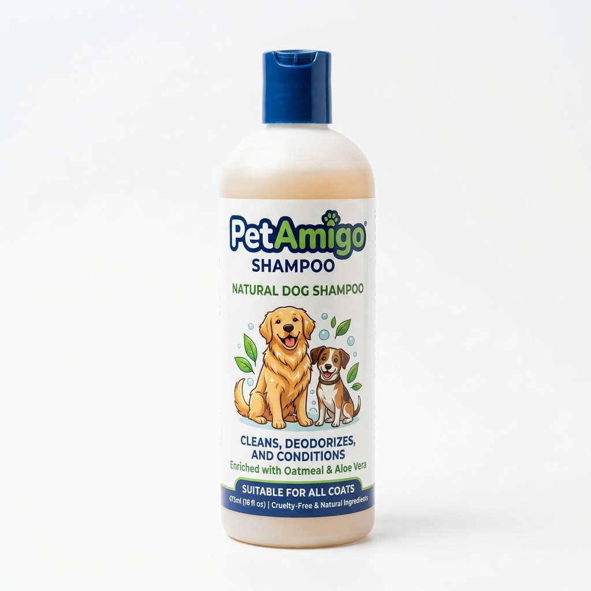
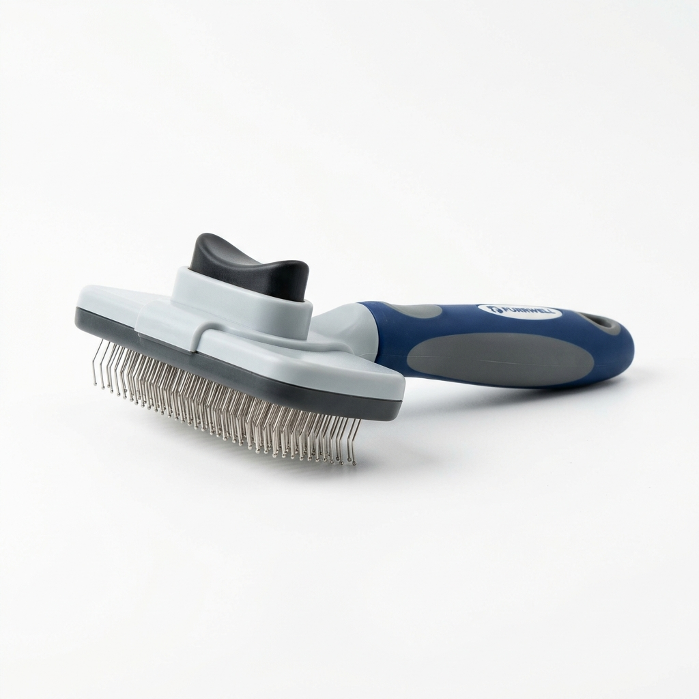

A higiene é fundamental para a saúde do seu pet. Confira nossa linha completa de produtos para manter seu animal sempre limpo e cheiroso!
Shampoo PetAmigo Pelo Brilhante

Shampoo PetAmigo Pelo Brilhante - 500ml
Descrição: Shampoo dermatológico hipoalergênico formulado especialmente para cães de todas as
raças. Com extratos naturais de camomila e aloe vera, hidrata, suaviza e deixa o pelo brilhante e perfumado.
pH balanceado para a pele sensível dos pets. Livre de parabenos e sulfatos. Rende em média 15 banhos
para cães de médio porte.
Volume: 500 ml
Indicado para: Cães de todos os portes
Fragrância: Lavanda e camomila
Fórmula: Hipoalergênica, sem parabenos
Valor: R$ 28,90
Escova Removedora de Pelos PetAmigo

Escova Removedora de Pelos - PetAmigo Grooming
Descrição: Escova profissional com cerdas de aço inoxidável flexíveis que removem eficientemente
pelos soltos, nós e emaranhados sem machucar a pele do animal. Ideal para uso regular, reduz a queda de pelos
e estimula a circulação sanguínea. Cabo ergonômico antiderrapante com botão de limpeza automática das cerdas.
Adequada para cães e gatos de pelo curto, médio ou longo.
Material: Aço inoxidável e plástico ABS
Indicado para: Cães e gatos (pelo curto, médio e longo)
Cor: Cinza e azul
Diferencial: Botão de limpeza automática das cerdas